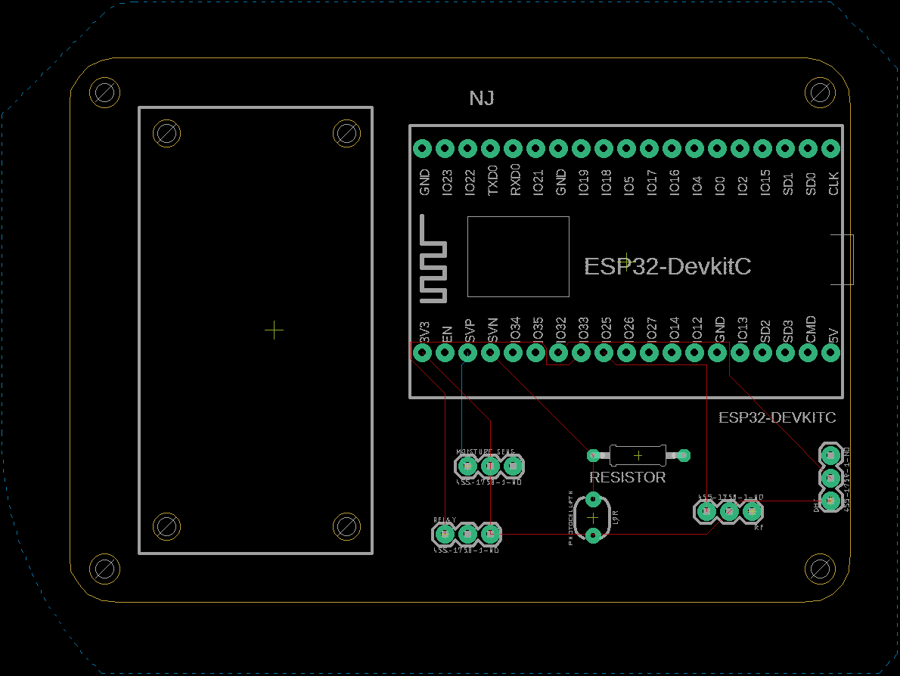
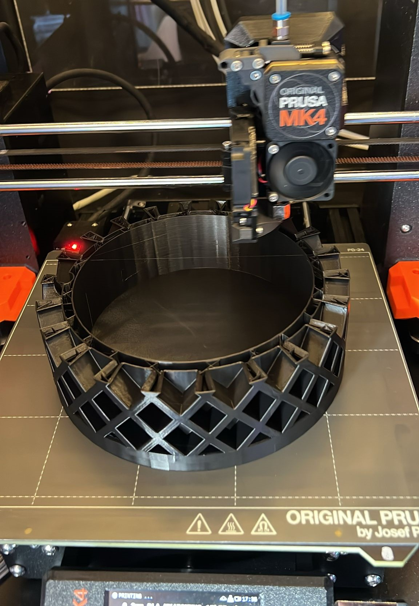

Plantsysteem
In dit artikel leg ik uit welke stappen ik heb genomen om een IoT-systeem voor een plant te maken. Het IoT-systeem maakt gebruik van sensoren en actuatoren, namelijk:
- Soil moisture sensor: Meet het vochtgehalte van de potgrond.
- DHT sensor: Meet de temperatuur en de luchtvochtigheid van de omgeving.
- LDR: Meet de hoeveelheid licht.
- RF transmitter: Stuurt een signaal om het licht aan en uit te schakelen.
- Relay: Gebruikt om een waterpomp aan en uit te zetten.
De sensoren en actuatoren worden aangestuurd met een ESP32 microcontroller, die geprogrammeerd is met de PlatformIO-extensie in Visual Studio Code. De code, geschreven in C++, maakt het mogelijk om elke sensor en actuator afzonderlijk te testen. Ook kan de code gebruikt worden om verbinding te maken met Blynk of InfluxDB. In het configuratiebestand (“platform.ini”) wordt bepaald welke code naar de ESP32 wordt geüpload. Ik heb ervoor gekozen om de Blynk-app te gebruiken, zodat ik via mijn telefoon de waarden van alle sensoren kan zien en de actuatoren kan aansturen. Met werkende sensoren en actuatoren moet het systeem nog tot een geheel worden samengesteld. Hiervoor heb ik mij verdiept in het maken van een printed circuit board (PCB) en een 3D-geprint model. De PCB maakt het eenvoudig om alle componenten (sensoren, actuatoren, microcontroller) met elkaar te verbinden zonder losse draden. Mijn PCB is ontworpen met Autodesk EAGLE en ziet er als volgt uit:

Om de componenten op de PCB aan te sluiten, heb ik gebruik gemaakt van connector headers, die ik op de PCB heb gesoldeerd. Tijdens het opnieuw testen van alle componenten die op de PCB waren aangesloten, ontdekte ik echter een fout. In mijn ontwerp maak ik gebruik van een "ground plane" (GND) waaraan alle sensoren en actuatoren zijn verbonden. Ik had echter niet gedacht aan het verbinden van de ESP32 met de ground plane, wat problemen veroorzaakte. Gelukkig kon ik gebruik maken van de PCB van Camiel. Nadat ik deze PCB opnieuw had gesoldeerd, werkten alle componenten weer correct.
De volgende stap is het maken van een 3D-geprint model om alle elektronica in te huisvesten. Als inspiratie bron heb ik dit concept gebruikt: AI Plant Pot. Ik heb geprobeerd de plantenpot na te maken in SolidWorks 3D CAD, maar dit bleek te ambitieus. Daarom heb ik mijn model gemaakt met Tinkercad, dat minder geavanceerd is maar een veel lagere leercurve heeft. Op papier heb ik de volgende overwegingen uitgewerkt voor het maken van het model:
- De pot bestaat uit twee delen.
- Het bovenste gedeelte heeft ruimte voor de plant (>15 cm diameter).
- Ruimte voor de bedrading van de LDR en de soil moisture sensor.
- Ruimte voor de batterij, relay en PCB met DHT sensor in het onderste gedeelte.
- Een opening voor de USB-kabel in het onderste gedeelte.
- Gaten in het bovenste gedeelte en pinnen in het onderste gedeelte, zodat beide onderdelen in elkaar kunnen klikken.
Het printen van de plantenpot duurde bijna 26 uur:

Automatisering en Robotica
Met een klein groepje ben ik uitgenodigd voor een workshop "Robotica" aan de TU Delft. Na een korte rondleiding gaf Thijs Brilleman een introductie. Wat mij vooral bijbleef, was zijn overtuiging over de noodzaak van automatisering en robotisering. Hij gaf als voorbeeld het Evergreen-schip dat vastzat in het Suezkanaal, wat leidde tot aanzienlijke vertragingen in leveringen. Tijdens die periode werd duidelijk hoe afhankelijk Europa is van landen zoals China. Door de geopolitieke spanningen wereldwijd realiseert men zich dat het belangrijk is om ook zelf onderdelen en producten te produceren. Aangezien er te weinig arbeiders zijn om dit te realiseren, zal automatisering cruciaal worden. Dit zijn niet mijn woorden, maar ik zie wel het verband in zijn verhaal, althans ik zou het graag willen zien gebeuren. Vervolgens hebben we onder begeleiding van Mathijs van der Vegt zelf een robotarm mogen aansturen.